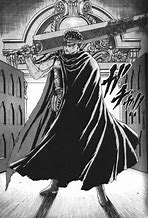

بيرسيرك
قصة غوتس المحارب الذي يواجه مصيراً قاسياً في عالم مظلم ووحشي.
النوع: فانتازيا مظلمة، أكشن، دراما
قصة غوتس المحارب الذي يواجه مصيراً قاسياً في عالم مظلم ووحشي.
النوع: فانتازيا مظلمة، أكشن، دراما
طالب ذكي يجد دفتراً يمكنه قتل الناس بكتابة أسمائهم فيه.
النوع: غموض، إثارة نفسية، جريمة
سيرة ذاتية خيالية للساموراي الأسطوري مياموتو موساشي.
النوع: تاريخي، ساموراي، دراما